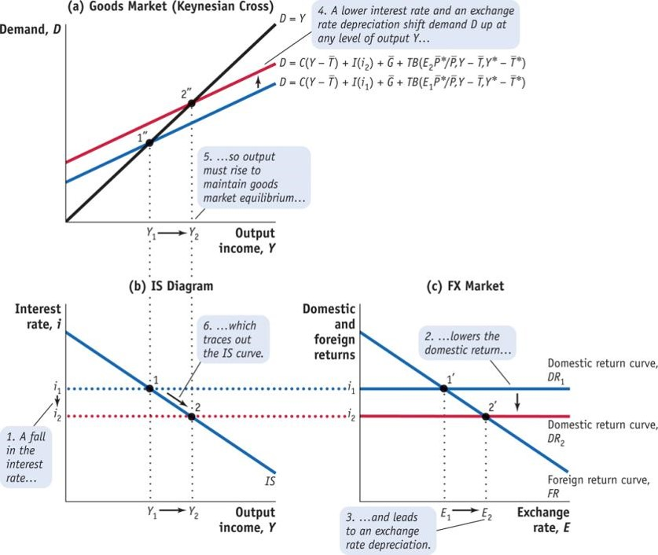
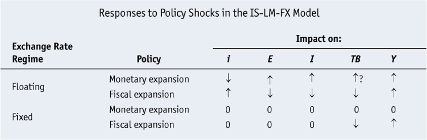
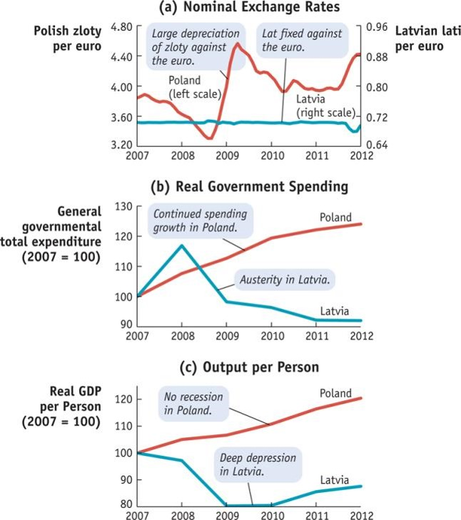

ECES905205 meeting 7
October 10, 2024
We have learnt concepts like UIP and CIP.
We combine that with our understanding of GDP, GNE and GNDI in the open macroeconomic setting.
We will see how these concepts translate to IS-LM model: a framework we use to analyze the economy in the short run.
We analyze a (small) Home country \(H\) and a (large) Foreign “country” \(F\) which consists of the rest of the world (ROW).
Since it’s short run, prices are sticky both at home \((P=\bar{P})\) and foreign \((P^*=\bar{P}^*)\). Since price is sticky, expected inflation is zero \((\pi^e=0)\).
We assume that government spending 𝐺 ̅ and taxes 𝑇 ̅ are fixed, but subject to policy change.
We assume that foreign output \(\bar{Y}^*\) and the foreign interest rate \(i^*\) are fixed. Our main interest is in the equilibrium and fluctuations in the home economy.
We assume that income \(Y\) is equivalent to output; that is, gross domestic product (GDP) equals gross national disposable income (GNDI).
We assume that net factor income from abroad (NFIA) and net unilateral transfers (NUT) are zero, which implies that the current account (CA) equals the trade balance (TB).
\[ \text{Consumption}=C=C(Y-\bar{T}) \]
This equation is known as the Keynesian consumption function.
Marginal Effects The slope of the consumption function is called the marginal propensity to consume (MPC). We can also define the marginal propensity to save (MPS) as 1 − MPC.
The Consumption Function The consumption function relates private consumption, C, to disposable income, Y − ¯𝑇. The slope of the function is the marginal propensity to consume, MPC.
\[ r^e = i − \pi^e \]
Since expected inflation is zero, the expected real interest rate equals the nominal interest rate, \(r^e = i\).
Investment I is a decreasing function of the real interest rate. So investment \(I(r)\) falls as the real interest rate rises.
But expected inflation is zero, so the real interest rate equals the nominal interest rate. We can then write \(I(i)\).
Investment relationship with nominal interest rate in the short run.
We expect an increase in home income to be associated with an increase in home imports and a fall in the home country’s trade balance.
We expect an increase in rest of the world income to be associated with an increase in home exports and a rise in the home country’s trade balance.
The trade balance is, therefore, a function of three variables: the real exchange rate, home disposable income, and rest of world disposable income.
\[ TB=TB(E\bar{P}^*/\bar{P},Y-\bar{T},\bar{Y}^*-\bar{T}^*) \]
Changes in q moves equilibrium along the TB curve. Changes in Ys and Ts shifts the TB curve.
We refer to MPCF as the marginal propensity to consume foreign imports.
Let \(MPC_H > 0\) be the marginal propensity to consume home goods. By assumption, \(MPC = MPC_H + MPC_F\).
For example, if we have \(MPC_F = 0.10\) and \(MPC_H = 0.65\), then \(MPC = 0.75\); for every extra $1 of disposable income, home consumers spend 75 cents—10 cents on imported foreign goods and 65 cents on home goods (and they save 25 cents).
The Real Exchange Rate and the Trade Balance: United States, 1975–2012. The data show that the U.S. trade balance is correlated with the U.S. real effective exchange rate index. Because the trade balance also depends on changes in the United States and rest of the world, disposable income (and other factors), it may respond with a lag to changes in the real exchange rate, so the correlation is not perfect (as seen in the years 2002–2007).
A composite or weighted-average measure of the price of goods in all foreign countries relative to the price of U.S. goods is constructed using multilateral measures of real exchange rate movement.
Applying a trade weight to each bilateral real exchange rate’s percentage change, we obtain the percentage change in home’s multilateral real exchange rate or real effective exchange rate:
\[ \frac{\Delta q_{\text{effective}}}{q_{\text{effective}}}=\left(\frac{Trade_1}{\sum Trade}\frac{\Delta q_1}{q_1}\right)+\left(\frac{Trade_2}{\sum Trade}\frac{\Delta q_2}{q_2}\right)+\cdots \]
\[ \text{Home real XR}=d \frac{\bar{P}^*}{P_1}+(1-d)\frac{\bar{P}^*}{P_2} \]
The table shows the extent to which the dollar and the euro were used in the invoicing of payments for exports and imports of different countries in the 2002–2004 period. In the United States, for example, 100% of exports are invoiced and paid in U.S. dollars but so, too, are 93% of imports. In Asia, U.S. dollar invoicing is very common, accounting for 48% of Japanese exports and more than 75% of exports and imports in Korea, Malaysia, and Thailand.
The table shows the extent to which the dollar and the euro were used in the invoicing of payments for exports and imports of different countries in the 2002–2004 period. In Europe the euro figures more prominently as the currency used for trade, but the U.S. dollar is still used in a sizable share of transactions.
Given our assumption that the current account equals the trade balance, gross national income Y equals GDP:
\[ Supply=GDP=Y \]
Aggregate demand, or just “demand,” consists of all the possible sources of demand for this supply of output.
\[ Demand=D=C+I+G+TB \]
In equilibrium:
\[ Y=C(Y-\bar{T})+I(i)+\bar{G}+TB(E\bar{P}^*/\bar{P},Y-\bar{T},\bar{Y}^*-\bar{T}^*) \]
At point 1, Y=D. At point 2, the output level is Y2 and demand, D, exceeds supply, Y; as inventories fall, firms expand production and output rises toward Y1. At point 3, the output level is Y3 and supply Y exceeds demand; as inventories rise, firms cut production and output falls toward Y1.
An increase in demand shifts curve D up. Supply reacts by increasing its supply, thus equilibrium moves to point 2.
These phenomena shifts D upward:
Rise in government spending G
Fall in taxes T
Fall in the home interest rate i
Rise in the nominal exchange rate E
Rise in foreign prices P*
Fall in home prices P
Any shift up in the consumption function C
Any shift up in the investment function I
Any shift up in the trade balance function TB
A general equilibrium requires equilibrium in all markets—that is, equilibrium in the goods market, the money market, and the forex market.
The IS curve shows combinations of output Y and the interest rate i for which the goods and forex markets are in equilibrium.
\[ i=i^*+\left(\frac{E^e}{E}-1 \right) \]

The Keynesian cross is in panel (a), the IS curve is in panel (b), and the forex (FX) market is in panel (c). The economy starts in equilibrium with output, \(Y_1\); interest rate, \(i_1\); and exchange rate, \(E_1\).
Consider the effect of a decrease in the interest rate from \(i_1\) to \(i_2\), all else equal. In panel (c), a lower interest rate causes a depreciation; equilibrium moves from 1′ to 2′.
A lower interest rate boosts investment and a depreciation boosts the trade balance. In panel (a), demand shifts up from \(D_1\) to \(D_2\), equilibrium from 1′′ to 2′′, and output from \(Y_1\) to \(Y_2\).
In panel (b), we go from point 1 to point 2. The IS curve is thus traced out, a downward-sloping relationship between the interest rate and output.
When the interest rate falls from \(i_1\) to \(i_2\), output rises from \(Y_1\) to \(Y_2\). The IS curve describes all combinations of \(i\) and \(Y\) consistent with goods and FX market equilibria in panels (a) and (c).
Two important observations are in order:
In an open economy, lower interest rates stimulate demand through the traditional closed-economy investment channel and through the trade balance.
The trade balance effect occurs because lower interest rates cause a nominal depreciation (a real depreciation in the short run), which stimulates external demand.
We have now derived the shape of the IS curve, which describes goods and forex market equilibrium:
\[ IS(G,T,i^*,E^e,P^*,P) \]
Rise in government spending G
Fall in taxes T
Rise in foreign interest rate 𝑖^∗
Rise in future nominal exchange rate 𝐸^𝑒
Rise in foreign prices P*
Fall in home prices P
Any shift up C,I and TB
will shift D up,and consequently shift IS up.
Next we derive LM curve. Recall:
\[ \underbrace{\frac{M}{\bar{P}}}_{Real \ money \\ suppy}=\underbrace{L(i)Y}_{Real \ money \\ demand} \]
which just supply of money equals demand of money. since this is the short term and P constant, changes in nominal money supply equals changes in real money supply.
Suppose Y goes up to Y2 and MS doesn’t move, i goes up. Money market equilibrium moves from 1’ to 2’. The LM curve describes all combinations of i and Y that are consistent with money market equilibrium in panel (a).
If MS goes right while Y doesn’t move, then i goes down in the money market without Y changes. This shifts LM curve on the right picture.
Rise in nominal money supply \(M\) and any shifts the general demand function \(L(i)\) that increase the demand will shifts LM curve to the right (or down. same thing).
These shocks will reduce \(i\) given the same \(Y\).
In panel (a), the IS and LM curves are both drawn. The goods and forex markets are in equilibrium when the economy is on the IS curve. The money market is in equilibrium when the economy is on the LM curve. Both markets are in equilibrium if and only if the economy is at point 1, the unique point of intersection of IS and LM. In panel (b), the forex (FX) market is shown. The domestic return, DR, in the forex market equals the money market interest rate. Equilibrium is at point 1′ where the foreign return FR equals domestic return, i.
We focus on the two main policy actions: changes in monetary policy, via changes in the money supply, and changes in fiscal policy, via changes in government spending or taxes.
The key assumptions of this section are as follows:
The economy starts in long-run equilibrium. We then consider policy changes in the home economy, assuming that conditions in the foreign economy are unchanged.
The home economy is subject to the usual short-run assumption of a sticky price level at home and abroad.
Furthermore, we assume that the forex market operates freely and is unrestricted by capital controls and that the exchange rate is determined by market forces.
In panel (a) in the IS–LM diagram, the goods and money markets are initially in equilibrium at point 1. The interest rate in the money market is also the domestic return, DR1, that prevails in the forex market. In panel (b), the forex market is initially in equilibrium at point 1′. A temporary monetary expansion that increases the money supply from M1 to M2 would shift the LM curve down in panel (a) from LM1 to LM2, causing the interest rate to fall from i1 to i2. DR falls from DR1 to DR2.
In panel (b), the lower interest rate implies that the exchange rate must depreciate, rising from E1 to E2. As the interest rate falls (increasing investment, I) and the exchange rate depreciates (increasing the trade balance), demand increases, which corresponds to the move down the IS curve from point 1 to point 2. Output expands from Y1 to Y2. The new equilibrium corresponds to points 2 and 2′.
Under floating exchange rate:
A temporary monetary expansion under floating exchange rates is effective in combating economic downturns by boosting output.
It raises output at home, lowers the interest rate, and causes a depreciation of the exchange rate. What happens to the trade balance cannot be predicted with certainty.
Under fixed exchange rate, Monetary policy is impossible to undertake. Fixing the exchange rate means giving up monetary policy autonomy.
Countries cannot simultaneously allow capital mobility, maintain fixed exchange rates, and pursue an autonomous monetary policy. This is the trilemma faced by policy makers.
Under mixed exchange rate regime, \(i\) and \(M\) can move somewhat limitedly. It does take effect somewhere between fixed and float.
In panel (a) in the IS–LM diagram, the goods and money markets are initially in equilibrium at point 1. The interest rate in the money market is also the domestic return, DR1, that prevails in the forex market. In panel (b), the forex market is initially in equilibrium at point 1′.
A temporary fiscal expansion that increases government spending from G1 to G2 would shift the IS curve to the right in panel (a) from IS1 to IS2, causing the interest rate to rise from i1 to i2. The domestic return shifts up from DR1 to DR2.
In panel (b), the higher interest rate would imply that the exchange rate must appreciate, falling from E1 to E2. The initial shift in the IS curve and falling exchange rate corresponds in panel (a) to the movement along the LM curve from point 1 to point 2. Output expands Y1 to Y2. The new equilibrium corresponds to points 2 and 2′.
Under a floating exchange rate regime:
As the interest rate rises (decreasing investment, I) and the exchange rate appreciates (decreasing the trade balance), demand falls.
This impact of fiscal expansion is often referred to as “crowding out” whereby the increase in government spending is offset by a decline in private spending.
Note that, in an open economy, fiscal expansion crowds out investment (by raising the interest rate) and decreases net exports (by causing the exchange rate to appreciate).
Over time, it limits the rise in output to less than the increase in government spending.
An expansion of fiscal policy under floating exchange rates might be temporarily effective.
It raises output at home, raises the interest rate, causes an appreciation of the exchange rate, and decreases the trade balance.
It indirectly leads to crowding out of investment and exports, and thus limits the rise in output to less than an increase in government spending.
A temporary contraction of fiscal policy has opposite effects.
In panel (a) in the IS–LM diagram, the goods and money markets are initially in equilibrium at point 1. The interest rate in the money market is also the domestic return, DR1, that prevails in the forex market. In panel (b), the forex market is initially in equilibrium at point 1′.
A temporary fiscal expansion on its own increases government spending from G1 to G2 and would shift the IS curve to the right in panel (a) from IS1 to IS2, causing the interest rate to rise from i1 to i2. The domestic return would then rise from DR1 to DR2.
In panel (b), the higher interest rate would imply that the exchange rate must appreciate, falling from E1 to E2. To maintain the peg, the monetary authority must intervene, shifting the LM curve down, from LM1 to LM2. The fiscal expansion thus prompts a monetary expansion. In the end, the interest rate and exchange rate are left unchanged, and output expands dramatically from Y1 to Y2. The new equilibrium occurs at points 2 and 2′.
A temporary expansion of fiscal policy under fixed exchange rates raises output at home by a considerable amount. (The case of a temporary contraction of fiscal policy would have similar but opposite effects.)
Authorities can use changes in policies to try to keep the economy at or near its full-employment level of output. This is the essence of stabilization policy.
After the global financial crisis, many observers predicted economic difficulties for Eastern Europe in the short run. We use our analytical tools to look at two opposite cases: Poland, which fared well, and Latvia, which did not.
Demand for Poland’s and Latvia’s exports declined with the contraction of foreign output. This, along with negative shocks to consumption and investment, can be represented as a leftward shift of the IS curve.
The policy responses differed in each country, illustrating the contrasts between fixed and floating regimes.
In panels (a) and (b), we explore what happens when the central bank can stabilize output by responding to a negative demand shock with a monetary policy expansion. In panel (a) in the IS–LM diagram, the goods and money markets are initially in equilibrium at point 1. The interest rate in the money market is also the domestic return, DR1, that prevails in the forex market. In panel (b), the forex market is initially in equilibrium at point 1′.
An exogenous negative shock to the trade balance (e.g., due to a collapse in foreign income and/or financial crisis at home) causes the IS curve to shift in from IS1 to IS2. Without further action, output and interest rates would fall and the exchange rate would tend to depreciate.
With a floating exchange rate, the central bank can stabilize output at its former level by responding with a monetary policy expansion, increasing the money supply from M1 to M2. This causes the LM curve to shift down from LM1 to LM2.The new equilibrium corresponds to points 3 and 3′. Output is now stabilized at the original level Y1. The interest rate falls further. The exchange rate depreciates all the way from E1 to E2.
In panels (c) and (d) we explore what happens when the exchange rate is fixed and the government pursues austerity and cuts government spending G. Once again, an exogenous negative shock to the trade balance (e.g., due to a collapse in foreign income and domestic consumption and investment) causes the IS curve to shift in from IS1 to IS2. Without further action, output and interest rates would fall and the exchange rate would tend to depreciate.
With austerity policy, government cuts spending G and the IS shifts leftward more to IS4. If the central bank does nothing, the home interest rate would fall and the exchange rate would depreciate at point 2 and 2′. To maintain the peg, as dictated by the trilemma, the home central bank must engage in contractionary monetary policy, decreasing the money supply and causing the LM curve to shift in all the way from LM1 to LM4.

Macroeconomic Policy and Outcomes in Poland and Latvia, 2007–2012. Poland and Latvia reacted differently to adverse demand shocks from outside and inside their economies.
Panels (a) and (b) show that Poland pursued expansionary monetary policy, let its currency depreciate against the euro, and kept government spending on a stable growth path. Latvia maintained a fixed exchange rate with the euro and pursued an austerity approach with large government spending cuts from 2009 onward.
Panel (c) shows that Poland escaped a recession, with positive growth in all years. In contrast, Latvia fell into a deep depression, and real GDP per capita fell 20% from its 2007 peak.
Policy Constraints A fixed exchange rate rules out use of monetary policy. Other firm monetary or fiscal policy rules, such as interest rate or balanced-budget rules, limit policy.
Incomplete Information and the Inside Lag It takes weeks or months for policy makers to understand the state of the economy today. Then, it takes time to formulate a policy response (the lag between shock and policy actions is called the inside lag).
Policy Response and the Outside Lag It takes time for whatever policies are enacted to have any effect on the economy (the lag between policy actions and effects is called the outside lag).
Long-Horizon Plans If the private sector understands that a policy change is temporary, there may be reasons not to change expenditures. A temporary real appreciation may also have little effect on whether a firm can profit in the long run from sales in the foreign market.
Weak Links from the Nominal Exchange Rate to the Real Exchange Rate Changes in the nominal exchange rate may not translate into changes in the real exchange rate for some goods and services.
Pegged Currency Blocs Exchange rate arrangements in some countries may be characterized by a mix of floating and fixed exchange rate systems with different trading partners.
Weak Links from the Real Exchange Rate to the Trade Balance
Changes in the real exchange rate may not lead to changes in the trade balance. The reasons for this weak linkage include transaction costs in trade, and J curve effects.
These effects may cause expenditure switching to be a nonlinear phenomenon: It will be weak at first and then much stronger as the real exchange rate change grows larger.
For example: Prices of BMWs in the United States barely change in response to changes in the dollar–euro exchange rate.
After a severe negative shock to demand, the IS curve may move very far to the left (IS1). The nominal interest rate may then fall all the way to the zero lower bound (ZLB), with IS1 intersecting the flat portion of the LM1 curve at point 1, in panel (a). Output is depressed at a level Y1. In this scenario, monetary policy is impotent because expansionary monetary policy (e.g., a rightward shift from LM1 to LM2) cannot lower the interest rate any further.
However, fiscal policy may be very effective, and a shift right from IS1 to IS2 leaves the economy still at the ZLB, but with a higher level of output Y2. (The figure is drawn assuming the ZLB holds in both home and foreign economies, so the FX market is in equilibrium at point 1′ with E = Ee at all times.)
In the U.S. economic slump of 2008–2010, output had fallen 6% below the estimate of potential level of GDP by the first quarter of 2009, as seen in panel (a). This was the worst U.S. recession since the 1930s. Policy responses included automatic fiscal expansion (increases in spending and reductions in taxes), plus an additional discretionary stimulus.
The tax part of the stimulus appeared to do very little: Significant reductions in taxes seen in panel (b) were insufficient to prop up consumption expenditure, as seen in panel (a), as consumers saved the extra disposable income.
And on the government spending side, there was no stimulus at all in the aggregate: Increases in federal government expenditure were fully offset by cuts in state and local government expenditure, as seen in panel (b).
The aggregate U.S. fiscal stimulus had four major weaknesses:
With monetary policy impotent and fiscal policy weak and ill designed, the economy remained mired in its worst slump since the 1930s Great Depression.